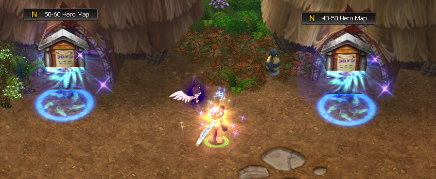
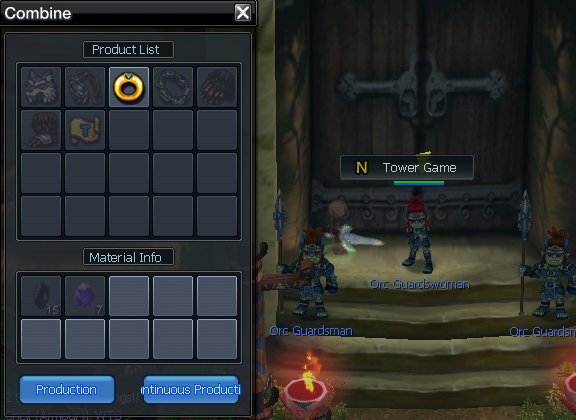
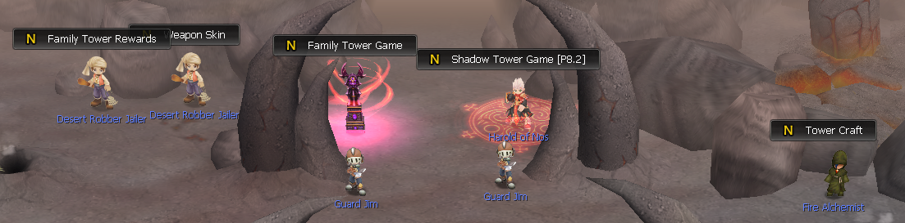
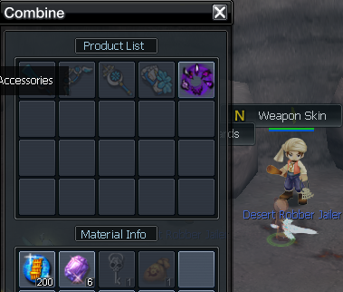

<div class="d-flex justify-content-center">
    <div class="badges">
        <a class="scrollTop" href="/money#"> <i class="fa fa-arrow-up" aria-hidden="true"></i> </a>
        <nav class="navbar navbar-expand-lg">
            <div class="container-fluid">
              <button class="navbar-toggler" type="button" data-bs-toggle="collapse" data-bs-target="#navbarNav"
                aria-controls="navbarNav" aria-expanded="false" aria-label="Toggle navigation">
                <i class="fa fa-bars nos-bars" aria-hidden="true"></i>
              </button>
              <div class="collapse navbar-collapse" id="navbarNav">
                <ul class="navbar-nav">
                  <li class="nav-item"> <a class="nav-link" href="/money#1">Fishing</a></li>
                  <li class="nav-item"> <a class="nav-link" href="/money#2">Gold farming on maps</a></li>
                  <li class="nav-item"> <a class="nav-link" href="/money#3">Caligor</a></li>
                  <li class="nav-item"> <a class="nav-link" href="/money#4">Asgobas IC</a></li>
                  <li class="nav-item"> <a class="nav-link" href="/money#5">Tower Games</a></li>
                  <li class="nav-item"> <a class="nav-link" href="/money#6">Quests</a></li>
                  <li class="nav-item"> <a class="nav-link" href="/money#7">Feathers farming</a></li>
                  <li class="nav-item"> <a class="nav-link" href="/money#8">Fernon Marathon</a></li>
                  <li class="nav-item"> <a class="nav-link" href="/money#9">World Bosses</a></li>
                </ul>
              </div>
            </div>
          </nav>

          <div class="scrollItems">

          </div>

        
        <h1 class="badges-title">How to make money? </h1>
        <div class="badge-content">
            <div id="1" class="scrollHere"></div>
            <h2 class="sg-tit-2">-- Fishing --</h2>
            <br/>
            <p>
                Fishing is a very good source of earning money.<br/>
Of course, not right away - you need to prepare yourself before earning enough.
For this we need Angler SP on at least 40 job lvl.
In addition to SP, items with fishing bonuses are required. <br/>
The most important items are <u style="color: rgb(38, 182, 25)">Fishing Master Tittle, Palina PSP, Snorkeling Costume Set.</u><br/>
If we have all this prepared, we can start fishing on the P6 Fishing Map. <br/>
We will start getting <u style="color: rgb(38, 182, 25)">Tattoo Box 1 and Carve Runes Box 1</u> there, which are our biggest source of money. 
After successful fishing, all that remains is to open them and sell Moritius Obsidian, Loa Runic Powder.<br/>
More detailed description of the fishing process can be found <a href="https://wiki.nosvoid.com/fish-system"> here</a><br/>
Fishing boost items can be found <a href="https://wiki.nosvoid.com/fish-set"> here</a>
            </p>
            <hr>
            <div id="2" class="scrollHere"></div>
            <h2 class="sg-tit-2">-- Gold farming on maps --</h2>
            <br/>
            <p>
                Killing mobs can be very good option to get money. <br/>
                By doing that you can reach up to 2b per hour with items that increase amount of gold you earn. <br/>
                List of that items can be found <a href="https://wiki.nosvoid.com/gold-set"> here</a><br/>
                <br/>
                <u style="color: rgb(38, 182, 25)"> First spot</u><br/>
                To make it work, you must get married with your second character. On the $warp p3 map you set your second character like this.<br/>
                <br/>
                Then with your main character you lure and clear 50-60 Hero Map,
                teleport to your second char with marriage teleportation and do the same with 40-50 Hero Map.<br/>
                <br/>
                <u style="color: rgb(38, 182, 25)"> Second spot</u><br/>
                Second spot is on the $warp p4 map - 50-60 Hero Map.<br/> The map clearing rotation looks like this<br/>
                <br/>
            </p>
            <hr>
            <div id="3" class="scrollHere"></div>
            <h2 class="sg-tit-2">-- Caligor --</h2>
            <br/>
            <p>Caligor Event can give you a lot of money if you're lucky.
            After Caligor you will get Caligor's Box and Caligor's Gucci Box from which you can get items like  <u style="color: rgb(38, 182, 25)">Blood-Red Ruby, Holy Light, Dragon Bone</u>.<br/>
            <br/>
            Price of each of them varies between 1-2b. In addition, you get a shell from each box. With even more luck, you can get a valuable shell that may be sold 
            for a big money. From Caligor's Gucci Box you can also get Vengful Draco Horn and Angelic Horn. These one are untradeable, but very valuabe for your character building.<br/>
            Caligor schedule can be found <a href="https://wiki.nosvoid.com/schedule"> here</a><br/>
            </p>
            <hr>
            <div id="4" class="scrollHere"></div>
            <h2 class="sg-tit-2">-- Asgobas Instant Combat --</h2>
            <br/>
            <p>
                Asgobas Instant Combat is very important activity to make money or improve your character.<br/>
                This is where you get the most important materials for craft p9 items or carving armours.<br/>
                Due to the fact that they are obtained only from here, they are also very expensive.<br/>
                <u style="color: rgb(38, 182, 25)"> Dragon Rock, Dragon Rock Fragment and all Dragon Energies</u> can be sold to players for huge money.<br/>
                From Asgobas Box you can also get Vengful Draco Horn and Angelic Horn. These one are untradeable, but very valuabe for your character building.<br/>
                Asgobas Instant Combat schedule can be found <a href="https://wiki.nosvoid.com/schedule"> here</a><br/>
            </p>
            <hr>
            <div id="5" class="scrollHere"></div>
            <h2 class="sg-tit-2">-- Tower Games --</h2>
            <br/>
            <p>
                Remember to participate in the Tower Games.
On the $warp p3 map you will find a Tower Game that can bring you a nice amount of money by crafting. <br/>
Be sure to take Daily Quests from Kachantrok NPC.<br/>
<br/>
<br/>
<br/>
<br/>
There is another Tower Games on $warp p4 map:  <u style="color: rgb(38, 182, 25)">Family Tower Game and Shadow Tower Game</u>.<br/>
<br/>
<br/>
<br/>
You must be a family member to participate in the Family Tower Game, Shadow Tower Game can be done solo.<br/>
  For each floor you complete, you'll get rewards that can be used to craft valuable rewards from NPCs, which you can then sell.<br/>

  
  
            </p>
            <hr>
            <div id="6" class="scrollHere"></div>
            <h2 class="sg-tit-2">-- Daily, Weekly and Marathon Quests --</h2>
            <br/>
            <p><u style="color: rgb(38, 182, 25)">Daily Quests</u> rewards is Random Amulet Box which can be sold for a huge amount of money. <br />
                <br />
                There are currently two very profitable <u style="color: rgb(38, 182, 25)">Weekly Quests</u>: "Particiapte in events" from which you get very expensive mats and "Kill monsters on Asgobas Instant Combat"
                which give you Ticket you can exchange for a chest from which you have a chance to get expensive items.<br />
                <br />
                For completing three <u style="color: rgb(38, 182, 25)">Marathon Quest</u> for ther first time
                you will receive three titles which you can exchange for a King/Queen of Raids Title which goes up to 10b each.<br />
                All quests are described<a href="https://wiki.nosvoid.com/daily-quests"> here</a>

               </p>
               <hr>
               <div id="7" class="scrollHere"></div>
               <h2 class="sg-tit-2">-- Angel's Feathers farming --</h2>
            <br/>
            <p>On <u style="color: rgb(38, 182, 25)">$warp farmarea</u> you can farm Angel's Feathers which with proper farming can be a good money income.<br />
                The most important thing is to do it with two characters at the same time.<br />
You place your second character in the middle of one of the maps, so that as many mobs as possible targeting you. Every respawn you use an AoE spell that kills whatever comes to your character.<br />
With your main character you clear one map and then immediately go to the other. <br />With this rotation, you will drop a solid amount of feathers
<br/>
<br/>


               </p>
               <hr>
               <div id="8" class="scrollHere"></div>
               <h2 class="sg-tit-2">-- Fernon Raid Marathons --</h2>
               <br/>
            <p>On <u style="color: rgb(38, 182, 25)">$warp p5</u> there is a Fernon Raid Area. <br />People often organize such a marathons to get money or reputation. 
                <br /> You can sell EQ from boxes in NPC and mats like Fernon's Eggs and Angel's Feather in the Baazar.

               </p>
               <hr>
               <div id="9" class="scrollHere"></div>
               <h2 class="sg-tit-2">-- World Bosses --</h2>
               <br/>
            <p>Participate in every World Bosses you can.<br /> By participating every day the money earns itself.<br /> Always with two accounts. <br />
               There is few World Bosses in different schedule:<br /> <u style="color: rgb(38, 182, 25)">Grenigas World Boss ($warp pwb), World Boss A4 (on glacernon) and Volcano World Boss ($warp wb) <br /></u>
               World Bosses schedule can be found <a href="https://wiki.nosvoid.com/schedule"> here</a><br />

               </p>
               <hr>
        </div>
    </div>
</div>